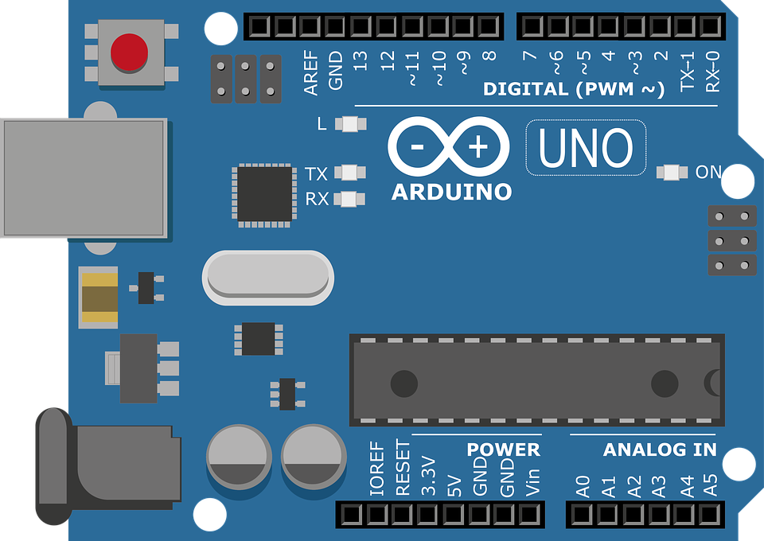
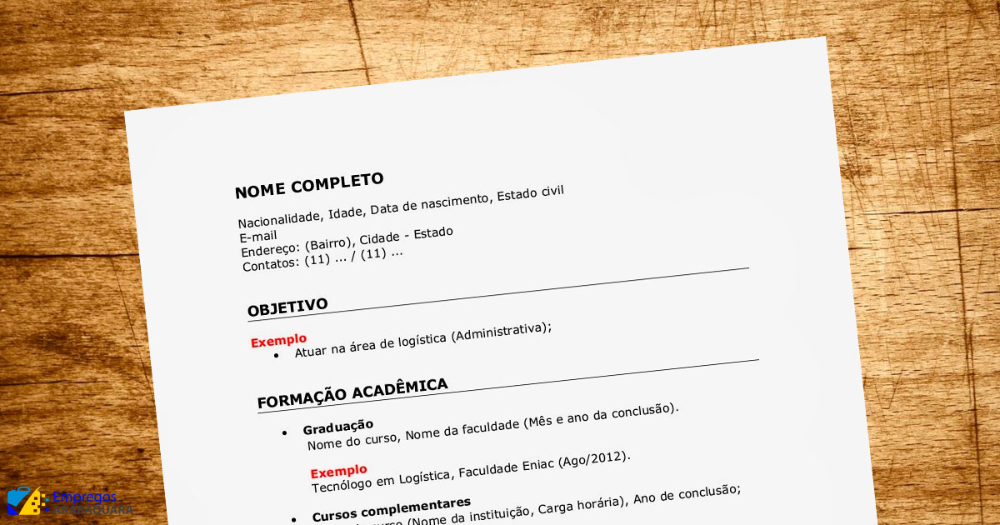

Arduino

Arduinos... Oque são ? Para que servem ?
O Arduino foi criado em 2005 por um grupo de 5 pesquisadores : Massimo Banzi, David Cuartielles, Tom Igoe, Gianluca Martino e David Mellis. O objetivo era elaborar um dispositivo que fosse ao mesmo tempo barato, funcional e fácil de programar,
sendo dessa forma acessível a estudantes e projetistas amadores. Além disso, foi adotado o conceito de hardware livre, o que significa que qualquer um pode montar, modificar, melhorar e personalizar o Arduino, partindo do mesmo hardware
básico. Assim, foi criada uma placa composta por um microcontrolador Atmel, circuitos de entrada/saída e que pode ser facilmente conectada à um computador e programada via IDE (Integrated Development Environment, ou Ambiente de Desenvolvimento
Integrado) utilizando uma linguagem baseada em C/C++, sem a necessidade de equipamentos extras além de um cabo USB.
Durante o curso de LIP (LABORATÓRIO DE INICIAÇÃO À PROGRAMAÇÃO) os estudantes utilizaram um site chamado TinkerCad para aprender como funciona um arduino, como montar um arduino e como codificar um arduino.
Aqui segue o link do meu projeto no TinkerCad: Projeto LIP
Scratch

TLinguagem Scratch... A linguagem dos blocos
O Scratch é uma linguagem de programação criada pelo grupo Lifelong Kindergarten da universidade americana MIT. Tem como objetivo ensinar a lógica da programação para crianças e adolescentes. Com ele, é possível criar histórias, jogos
e animações com scripts feitos com blocos. É um tipo de programação “visual”, mais simplificada. Isso permite que qualquer um, mesmo sem saber nada sobre programação, consiga criar projetos digitais com mais facilidade.
Para termos uma base sobre linguagens de programação, no curso de LIP (LABORATÓRIO DE INICIAÇÃO À PROGRAMAÇÃO) utilizamos o site "Scratch" para melhorarmos um jogo base usando "Comand blocks" e assim entender um pouco mais sobre lógica
de programação
O jogo base escolhido para melhorarmos foi o 2 pong, bem parecido com aquele jogo do atari em que você tinha que rebater uma bola e não deixar ela utrapassar a sua "raquete", imaginando um jogo parecido com ele, resolvi fazer um baseado
em Space invaders carinhosamente nomeado como "Pizza invaders"; nós tinhamos que melhorar o jogo utilizando os recursos do site e depois publicar ele para que nossos companheiros pudessem jogar.
Aqui segue o link do meu projeto feito no Scratch: Pizza
invaders
CV Lattes

"CV Lattes" O site para criar curriculos
A Plataforma Lattes é um sistema de currículos virtual criado e mantido pelo Conselho Nacional de Desenvolvimento Científico e Tecnológico, pelo qual integra as bases de dados curriculares, grupos de pesquisa e instituições em um único
sistema de informações, das áreas de Ciência e Tecnologia, atuando no Brasil.
Durante o curso de LIP (LABORATÓRIO DE INICIAÇÃO À PROGRAMAÇÃO) utilizamos o site CV Lattes para criarmos um curriculo que implementaremos nossos feitos durante a vida universitaria.
Aqui segue o link do meu curriculo Lattes: Me contrata